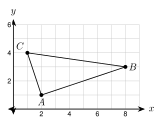
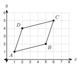
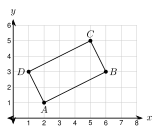
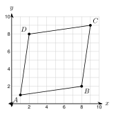
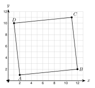
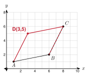

1. Find the slope of the line through (−1, 2) and (3, 5).
5 − 23 − (−1) = 34
2. Find the distance from (−2, 1) to (1, 5).
9 + 16 = 5
3. Solve 2x − 3 = x + 5.
x = 8

Way 1. Slope of AB: 3 − 18 − 2 = 13. Slope of AC: 4 − 11 − 2 = −3.
The product is 13 · (−3) = −1.
Way 2. AB2 = 62 + 22 = 40. AC2 = (−1)2 + 32 = 10. BC2 = (−7)2 + 12 = 50.
AB2 + AC2 = 40 + 10 = 50 = BC2.
Because the slopes of AB and AC have a product of −1 (and AB2 + AC2 = BC2), AB ⊥ AC. Triangle ABC is a right triangle with the right angle at A.
Slopes: PQ: 26 = 13. PR: 64 = 32. QR: 6 − 24 − 6 = −2.
Products: 13 · 32 = 12, 13 · (−2) = −23, 32 · (−2) = −3. None is −1.
Check by distance: PQ2 = 40, PR2 = 52, QR2 = 20. 40 + 20 = 60, which is not 52.
Because no pair of sides is perpendicular, triangle PQR is not a right triangle.
Slope of DE is 12. Slope of DF is 2−1 = −2. The product is −1. Because DE ⊥ DF, the triangle is a right triangle with the right angle at D.
AB = |7 − 1| = 6.
AC = 32 + 42 = 5. BC = (−3)2 + 42 = 5.
Because AC = BC = 5, triangle ABC is isosceles. It is not equilateral, because AB = 6 is different.
AB = 4.
AC = 22 + (23)2 = 4 + 12 = 4. BC = (−2)2 + (23)2 = 16 = 4.
Because AB = AC = BC = 4, triangle ABC is equilateral.
PQ = 4. PR = 4 + 16 = 20. QR = 4 + 16 = 20. Because PR = QR, triangle PQR is isosceles.
| Shape | What to check with coordinates |
|---|---|
| Parallelogram | Opposite sides have equal slopes (both pairs) |
| Rectangle | A parallelogram, and two sides at a corner have slopes with product −1 |
| Rhombus | All four sides have the same length |
| Square | A rectangle and a rhombus together |

Slopes: AB: 2 − 15 − 1 = 14. DC: 5 − 46 − 2 = 14. AD: 4 − 12 − 1 = 3. BC: 5 − 26 − 5 = 3.
Because both pairs of opposite sides have equal slopes, ABCD is a parallelogram.
Rectangle? 14 · 3 = 34, not −1. The corner at A is not a right angle. It is not a rectangle.
Rhombus? AB = 17 and AD = 10. They are not equal. It is not a rhombus.
So ABCD is a parallelogram and nothing more specific.

Slopes: AB and DC are both 12. AD and BC are both −2. It is a parallelogram.
At A: 12 · (−2) = −1. There is a right angle.
Because ABCD is a parallelogram with a right angle, it is a rectangle.
Square? AB = 20 and AD = 5. Not equal. So it is a rectangle but not a square.
AB = 5. BC = 32 + 42 = 5. CD = 5. DA = (−3)2 + (−4)2 = 5.
Because all four sides have length 5, ABCD is a rhombus.
Square? AB is horizontal (slope 0). AD has slope 43. They are not perpendicular. So it is a rhombus but not a square.
AB = 4 and BC = 4, and all sides are 4. AB is horizontal and BC is vertical, so they are perpendicular. Because ABCD has four equal sides and a right angle, it is a square.

AB = 72 + 12 = 50. BC = 12 + 72 = 50. CD = 50. DA = 50. All four sides are equal, so it is a rhombus.
Slope of AB: 17. Slope of AD: 71 = 7. The product is 17 · 7 = 1, not −1.
Because AB and AD are not perpendicular, ABCD is not a square. It is a rhombus.

Slopes: AB and DC are both 110. AD and BC are both 9−1 = −9. It is a parallelogram.
At A: 110 · (−9) = −910. This is close to −1, but it is not −1.
Because the product is −910, there is no right angle. ABCD is not a rectangle. It is a parallelogram.
Does "four equal sides" make a square? No. The rhombus in the example has four equal sides and is not a square. One example that breaks a rule is a counterexample. It is enough to show the rule is false.
Hnin says: "ABCD with A(1, 1), B(5, 2), C(6, 5), D(2, 4) is a rectangle because its opposite sides are equal."
The opposite sides are equal, but that is also true for a parallelogram that is not a rectangle. The missing check is a right angle. Here 14 · 3 = 34, so there is no right angle. It is not a rectangle.
Use the rhombus A(1, 1), B(6, 1), C(9, 5), D(4, 5). All sides are 5, but the corner at A is not a right angle (slopes 0 and 43).

Step from B to C: (8 − 6, 6 − 2) = (2, 4).
D = (1 + 2, 1 + 4) = (3, 5).
Check with slopes: AB: 15 and DC: 6 − 58 − 3 = 15. AD: 42 = 2 and BC: 42 = 2.
Because both pairs of opposite sides have equal slopes, ABCD with D(3, 5) is a parallelogram.
Step from Q to R: (2, 4). S = P + (2, 4) = (2, 4).
1. To show a right angle, show that two sides are perpendicular: the product of their slopes is −1.
2. To show a triangle is isosceles, compare side lengths found with distances.
3. A parallelogram with a right angle is a rectangle. A shape with four equal sides is a rhombus.
4. A proof ends with a sentence that starts with "Because ...".
1. A(0, 0), B(4, 2), C(−1, 2)
AB slope 12, AC slope −2. Because the product is −1, ∠A is a right angle. Right triangle.
2. P(−2, 1), Q(2, 3), R(4, −1)
QP slope 12, QR slope −2. Because the product is −1, ∠Q is a right angle. Right triangle.
3. X(0, 0), Y(5, 1), Z(2, 4)
XY2 = 26, XZ2 = 20, YZ2 = 18. 20 + 18 = 38 ≠ 26. Because no pair of sides satisfies a2 + b2 = c2, it is not a right triangle (it is acute).
4. (−4, 0), (2, 0), (−1, 5)
6, 34, 34. Because two sides are equal, it is isosceles.
5. (0, 0), (4, 0), (1, 3)
4, 10, 18. All different, so it is scalene (neither).
6. (0, 0), (6, 0), (3, 33)
6, 9 + 27 = 6, 6. Because all sides are 6, it is equilateral.
7. A(0, 0), B(6, 0), C(8, 3), D(2, 3)
AB ∥ DC (slope 0) and AD ∥ BC (slope 32). AB = 6, AD = 13. No right angle. Parallelogram only.
8. A(0, 0), B(3, 4), C(8, 4), D(5, 0)
All four sides are 5. AB slope 43, AD slope 0, not perpendicular. Rhombus, not a square.
9. A(1, 2), B(5, 0), C(7, 4), D(3, 6)
AB slope −12, AD slope 2. Parallelogram with a right angle. AB = AD = 20. Square.
10. A(0, 0), B(4, 0), C(5, 3), D(0, 3)
AB and DC are parallel. AD is vertical and BC has slope 3. Not a parallelogram.
11. The shape looks like a rectangle. Is it? Use slopes. (P(0, 0), Q(8, 1), R(7, 8), S(−1, 7))
PQ and SR have slope 18. PS and QR have slope −7. 18 · (−7) = −78. Because it is not −1, there is no right angle. Not a rectangle.
12. Kofi says every quadrilateral with four equal sides is a square. Give a counterexample with coordinates.
(0, 0), (5, 0), (8, 4), (3, 4) is a rhombus (all sides 5) but the corner at (0, 0) is not a right angle.
13. Moses says A(0, 0), B(5, 1), C(6, 6), D(1, 5) is a square because all sides are 26. Find his mistake.
Equal sides only give a rhombus. AB slope 15, AD slope 5. The product is 1, not −1. Not a square.
14. Parallelogram ABCD has A(0, 0), B(7, 1), C(9, 5). Find D.
Step B → C: (2, 4). D = (2, 4).
15. Rectangle ABCD has A(−3, 1), B(1, −1), C(3, 3). Show that the corner at B is a right angle. Find D.
BA slope −12, BC slope 2. Product −1. D = A + C − B = (−1, 5).
16. Triangle ABC has vertices A(−1, 2), B(5, 2), and C(2, 6). Which statement about the triangle is true?
A. It is an equilateral triangle.
B. It is an isosceles triangle that is not equilateral. ← correct
C. It is a right triangle.
D. It is a scalene triangle.
17. Quadrilateral PQRS has vertices P(0, 0), Q(4, 2), R(2, 6), and S(−2, 4). What is the most specific name for PQRS?
A. parallelogram
B. rectangle
C. rhombus
D. square ← correct
18. Rectangle ABCD has A(0, 0), B(4, 3), and D(−3, 4). Find C. Then show that the diagonals AC and BD have the same length.
C = B + D − A = (1, 7). AC = 1 + 49 = 50 and BD = 49 + 1 = 50. The diagonals are equal.
19. Three vertices of a parallelogram are (0, 0), (4, 1), and (1, 3). There are three different points that can be the fourth vertex. Find all three.
(0,0) + (1, 3) − (4, 1) = (−3, 2); (0, 0) + (4, 1) − (1, 3) = (3, −2); (4, 1) + (1, 3) − (0, 0) = (5, 4).